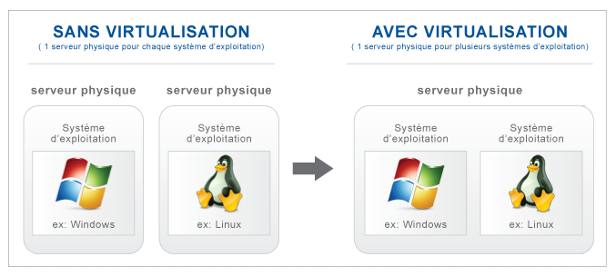
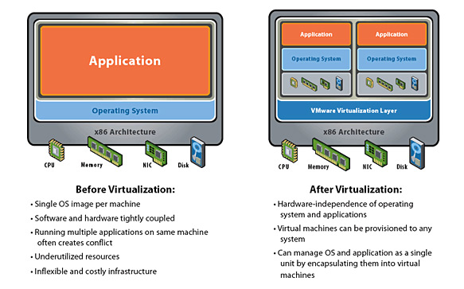
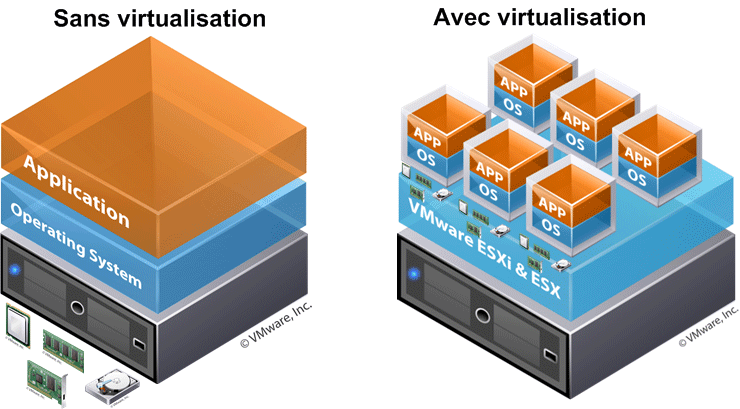
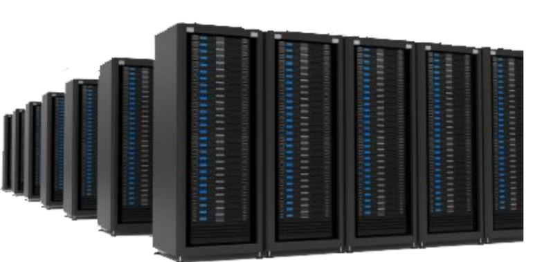
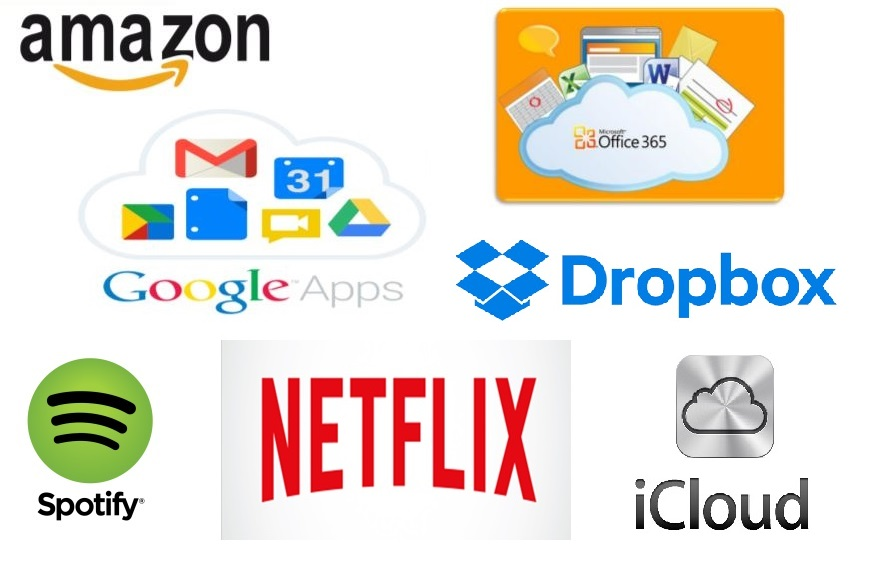
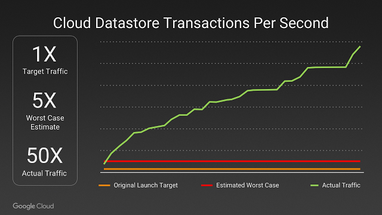
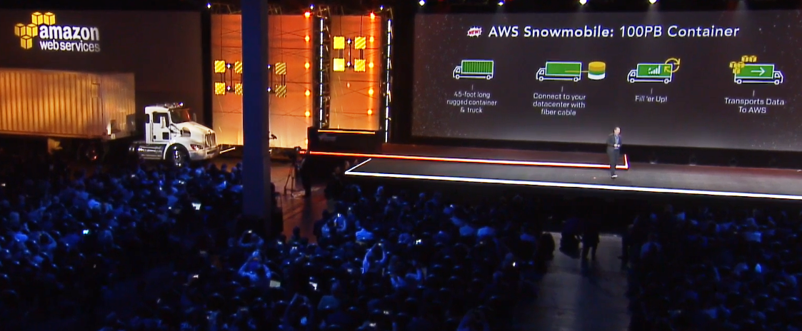

De la Virtualisation
au Cloud Computing
Au programme
-
Qu'est-ce que la virtualisation ?
-
Cloud : évolution ou révolution ?
-
Pause
-
Démo
Définition
“La virtualisation consiste à faire fonctionner un ou plusieurs systèmes d'exploitation / applications comme un simple logiciel, sur un ou plusieurs ordinateurs - serveurs / système d'exploitation, au lieu de ne pouvoir en installer qu'un seul par machine.”Wikipedia
Principe
Concrêtement
Concrêtement
Quel intérêt ?

Origines
- Juillet 2002 : Amazon est un site de vente en ligne
- Demande exponentielle, plus de clients : Amazon installe des dizaines de milliers de serveurs dans le monde, répartis dans de multiples datacenters. 
Caractéristiques

Différents types

Différents services

Un niveau de service adapté au besoin

Principaux fournisseurs

Légos...vraiment ? !

Mais où est mon serveur...?
Vous utilisez tous les jours le Cloud
Anecdote : Lancement de Pokemon Go !
Anecdote : AWS Swowmobile !
Anecdote : Netflix Chaos Monkey !

Pause

Let's practice !

GCP

Faites le test !


Conclusion
Contact : gdupin@gmail.com